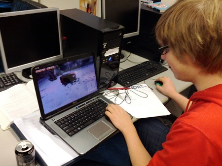
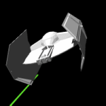
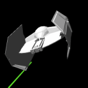

About
 My name is Tomas Verhoeff, a student turned entrepreneur with a background in Computer Science at the Delft University of Technology. After being involved with study society ‘Christiaan Huygens’ and chairing the Faculty Student Council I moved on to found Eveoh with two friends. Eveoh is a company specialized in developing software for the educational sector with a strong focus on student needs. Eveoh’s MyTimetable software provices close to 300.000 students with up-to-date timetables anytime and anywere.
My name is Tomas Verhoeff, a student turned entrepreneur with a background in Computer Science at the Delft University of Technology. After being involved with study society ‘Christiaan Huygens’ and chairing the Faculty Student Council I moved on to found Eveoh with two friends. Eveoh is a company specialized in developing software for the educational sector with a strong focus on student needs. Eveoh’s MyTimetable software provices close to 300.000 students with up-to-date timetables anytime and anywere.

Since 2010 I specialized in development for Microsoft’s Windows platform. As an active member in the Windows Phone development community I regularly blog and speak about the various aspects of developing high-quality applications for both Windows Phone and Windows 8. I’m also known for useful tools like the WP7 Review Reader

 which helped developers around the world gain insights in their apps reviews. After various succesful Windows Phone projects I co-founded Methylium in 2012. With Methylium we focus on managing (international) brands on the Windows Phone and Windows 8 platform. Our well known projects include NOS (WP/Win8), Parkmobile (WP) and Booking.com (Win8)
In 2012 and 2013 Microsoft awarded me the Most Valuable Professional award in Windows Phone Development for my expertise and community involvement.
Want to know more about me? Find me here:
Twitter: http://www.twitter.com/tomverhoeff
Facebook: http://www.facebook.com/tomverhoeff
LinkedIn: http://www.linkedin.com/in/tomverhoeff
which helped developers around the world gain insights in their apps reviews. After various succesful Windows Phone projects I co-founded Methylium in 2012. With Methylium we focus on managing (international) brands on the Windows Phone and Windows 8 platform. Our well known projects include NOS (WP/Win8), Parkmobile (WP) and Booking.com (Win8)
In 2012 and 2013 Microsoft awarded me the Most Valuable Professional award in Windows Phone Development for my expertise and community involvement.
Want to know more about me? Find me here:
Twitter: http://www.twitter.com/tomverhoeff
Facebook: http://www.facebook.com/tomverhoeff
LinkedIn: http://www.linkedin.com/in/tomverhoeff


Comments (2)
Krisztián Gyuris
|
 #
#
Hi Tom,
I recently found your tool reading windows phone 7 app reviews from the marketplace. I really liked your tool and I was wondering if you have this tool for Windows 8 store as well?
It would be awesome!
Thanks,
Krisztian
Reply
Lifestyle Liberation Blueprint Review
| #
I am truly grateful to the holder of this website who has shared
this fantastic piece of writing at here.
Reply